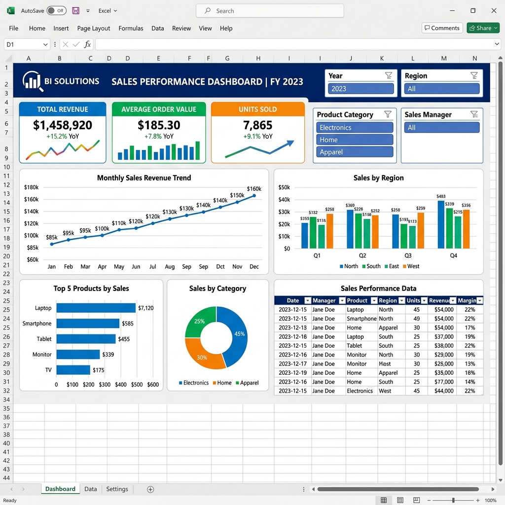

Excel • Demonstration Project1. Excel Sales Performance Dashboard
An interactive sales reporting project that organizes revenue, product performance, and regional sales trends into a clear dashboard.
Excel
PivotTables
Formulas
Charts
KPI Reporting